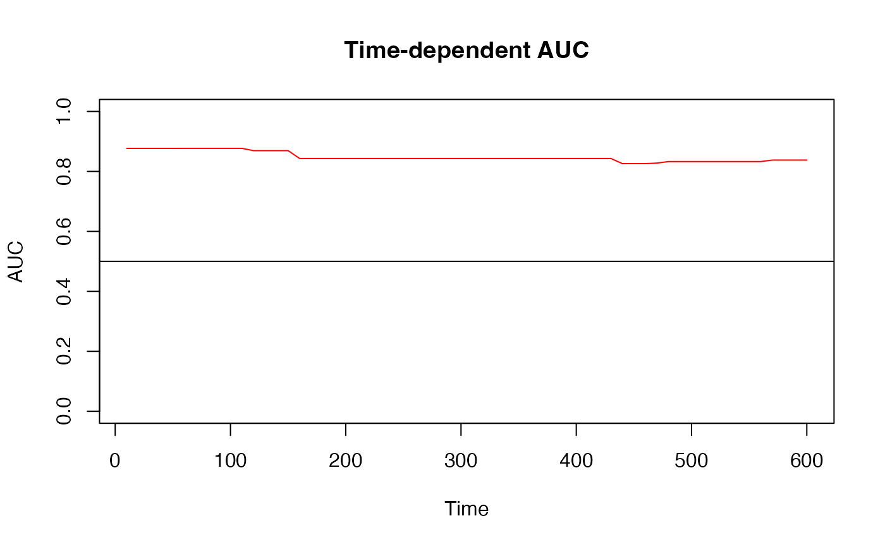
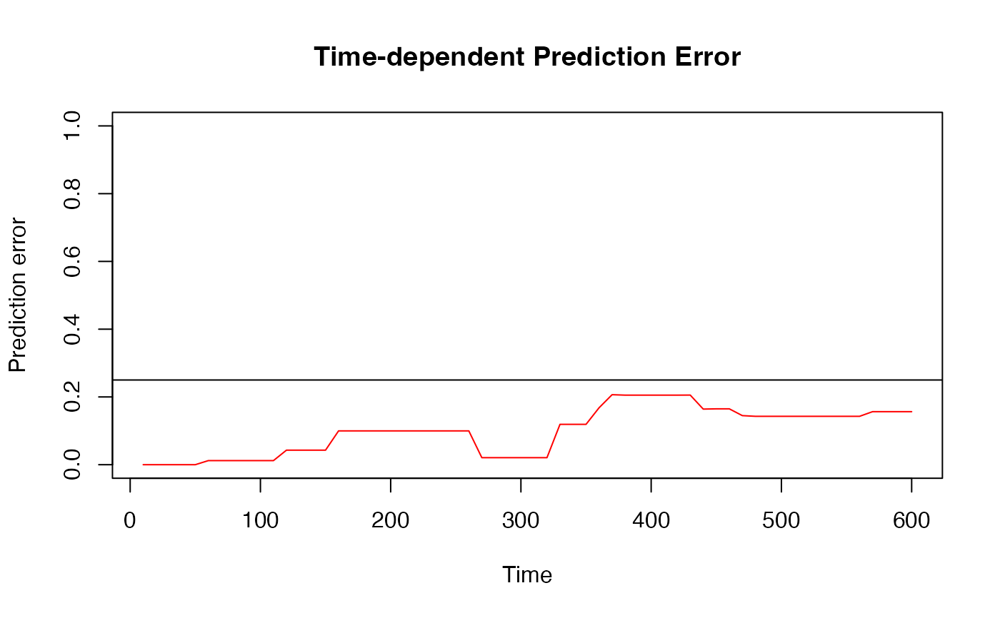

Plot method for survAUC and survErr Objects
Usage
# S3 method for class 'survAUC'
plot(
x,
col = "red",
type = "l",
ylim = c(0, 1),
xlab = "Time",
ylab = "AUC",
main = "Time-dependent AUC",
add = FALSE,
...
)
# S3 method for class 'survErr'
plot(
x,
col = "red",
type = "l",
ylim = c(0, 1),
xlab = "Time",
ylab = "Prediction error",
main = "Time-dependent Prediction Error",
add = FALSE,
...
)Arguments
- x
An object of class
survAUC.- col
The color used to draw the AUC curve.
- type
The type of plot to be drawn. See argument 'type' of the
plotfunction.- ylim
The y limits of the plot.
- xlab
The title of the x axis. See
title.- ylab
The title of the y axis. See
title.- main
The main title of the plot. See
title.- add
A logical specifying whether the AUC-Curve should be added to an already existing plot.
- ...
Graphics parameters that can be passed to 'plot'.
Details
Plot a survAUC object generated by the functions
AUC.uno, AUC.sh, AUC.cd,
AUC.hc and predErr.
Examples
data(cancer,package="survival")
TR <- ovarian[1:16,]
TE <- ovarian[17:26,]
train.fit <- survival::coxph(survival::Surv(futime, fustat) ~ age,
x=TRUE, y=TRUE, method="breslow", data=TR)
lp <- predict(train.fit)
lpnew <- predict(train.fit, newdata=TE)
Surv.rsp <- survival::Surv(TR$futime, TR$fustat)
Surv.rsp.new <- survival::Surv(TE$futime, TE$fustat)
times <- seq(10, 600, 10)
AUC_sh <- AUC.sh(Surv.rsp, Surv.rsp.new, lp, lpnew, times)
plot(AUC_sh)
abline(h = 0.5)

BrierScore <- predErr(Surv.rsp, Surv.rsp.new, lp, lpnew, times,
type = "brier", int.type = "weighted")
plot(BrierScore)
abline(h = 0.25)
